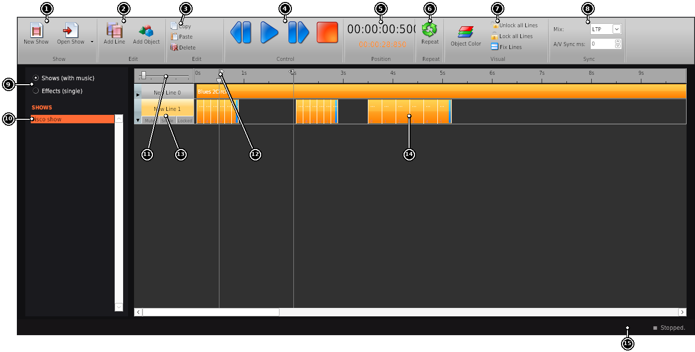
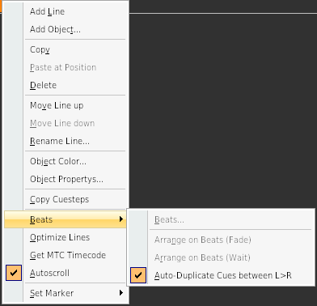

For: FullPlayer
A show places light sequences - and music - on a timeline, line under line, so that a whole part of an event plays by itself, always the same and in time with the music. The Show Editor tab of the top bar opens it. The editor works as in LumiDMX X1: the same ribbon, the same timeline and the same right-click menu.

Andrei_edit, "Disco show": Blues 2Circle on Line 0, three sequences on Line 1 (open, with their steps).
| 1 | Show - New Show (asks a name), Open Show (the Library, to drag a show from; the arrow next to it: the shows of the project, one click opens one). |
| 2 | Edit - Add Line (a new line at the bottom), Add Object (the Library: drag a light sequence or an audio object onto a line). |
| 3 | Edit - Copy, Paste (at the play head, on the line selected), Delete the object selected. |
| 4 | Control - back to the L marker, Play / Pause, forward to the R marker, Stop (the play head stays where the show was). |
| 5 | Position - the time of the play head (hours:minutes:seconds:milliseconds) and, in orange, the length of the show. |
| 6 | Repeat - the show plays again and again between the L and R markers. |
| 7 | Visual - Object Color (the colour of the object selected), Unlock all Lines / Lock all Lines, Fix Lines (the lines above the one selected stay in view while you scroll). |
| 8 | Sync - Mix: how the sequences of the show mix on a channel - LTP (the latest wins) or HTP (the highest wins); A/V Sync ms: moves the light against the music, in milliseconds, when the sound comes late or early. |
| 9 | Shows (with music) / Effects (single) - what the list under them shows: the shows, or the single light sequences. |
| 10 | The list. Double-click a show: it opens and starts to play. |
| 11 | The zoom of the timeline. Ctrl + mouse wheel zooms too, Shift + wheel scrolls the time. |
| 12 | The ruler, with the L flag (where the loop starts), the play head and the R flag (where it ends). Drag a flag or the play head; click the ruler to put the play head there. |
| 13 | The head of a line: its name; the arrow opens it, to show the steps and the buttons Mute (the line is silent), Single (only this line plays, the others are muted) and Locked (nothing on it can be moved). |
| 14 | The objects: one light sequence each, as long as its steps last. An open line shows every step, with its fade. |
| 15 | The state: Stopped, or the show that plays (and its music file). |
| click | Selects the line and the object under the mouse. |
| drag an object | On a closed line: to another time or another line (it does not go where it would overlap another). On an open line: along its line. |
| drag the right edge | Makes the object longer or shorter; every step is stretched in proportion. |
| drag a step's end | On an open line: changes the fade or the wait of that step. |
| double-click | Edit Cue Steps of the object. |
| mouse wheel | Moves to the next or the previous line. |
| Delete | Deletes the object selected. |
| drag from the Library | A light sequence or an audio object onto a line, at the time where you let it go. |

| Item | What it does |
|---|---|
| Add Line, Add Object... | As on the ribbon. |
| Copy, Paste at Position, Delete | The object selected; Paste puts it at the play head. |
| Move Line up / Move Line down, Rename Line... | The line selected. |
| Object Color..., Object Propertys... | The colour and the settings of the object selected. |
| Copy Cuesteps | The steps of the object once more after themselves: the object becomes twice as long. |
| Beats > Beats... | The beats of an audio object (the Beat Layer window): found in the music or set by hand. |
| Arrange on Beats (Fade) / (Wait) | The steps of the light object are put on the beats of the music, between the L and R markers: each step lasts from one beat to the next, as its fade or as its wait. |
| Auto-Duplicate Cues between L>R | Ticked: when there are more beats than steps, the steps are repeated until every beat has one. |
| Optimize Lines | Every object moves up into the first line where it fits; empty lines go. |
| Get MTC Timecode | The show follows the MIDI time code of another device instead of its own clock (the music is not played then). |
| Autoscroll | Ticked: the timeline follows the play head. |
| Set Marker > Left Marker / Right Marker | Puts L or R at the time where you right-clicked. |
A show can also be put on a button of the Live panel (drag it from the Library), and started from the Remote player.